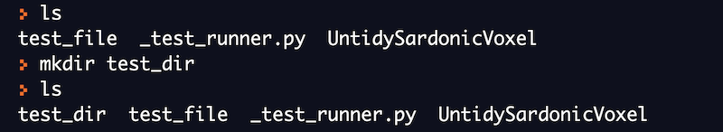

指令列基礎
實驗環境設定
您可以使用線上 Bash 直譯器來執行課程中提供的範例指令。這將協助您實際操作並體驗各種 Linux 指令。
REPL 是著名的線上 Bash 直譯器之一，我們將使用它來執行本課程中提到的所有指令。
什麼是指令
指令是告訴作業系統執行特定工作的程式。程式在 Linux 中是以檔案形式儲存的。因此，指令也是儲存在磁碟某處的檔案。
指令也可能會接受使用者的額外參數作為輸入，這些參數稱為指令列參數（command line arguments）。學會使用指令很重要，且在 Linux 中有許多方式可以查詢指令的使用說明。幾乎每個指令都會有某種文件說明，多數指令會有 -h 或 --help 參數，輸入後會顯示相當程度的文件。而 Linux 中最受歡迎的文件系統是稱為 man 頁面的手冊。
以下範例示範用 --help 顯示 ls 指令的說明：

檔案系統組織
Linux 檔案系統呈現階層（或樹狀）結構，其最高層目錄稱為 root（用 / 符號表示）。根目錄下的目錄儲存與系統相關的檔案。這些目錄可用來存放系統檔案、應用程式檔案或使用者相關檔案。

| 目錄 | 說明 |
|---|---|
| bin | 儲存大多數常用指令的可執行程式 |
| dev | 儲存與系統裝置相關的檔案 |
| etc | 儲存所有系統設定檔 |
| home | 儲存使用者相關的檔案與目錄 |
| lib | 儲存所有函式庫檔案 |
| mnt | 儲存與系統掛載裝置相關的檔案 |
| proc | 儲存與系統運行程序相關的檔案 |
| root | 儲存 root 使用者相關的檔案與目錄 |
| sbin | 儲存系統管理所用程式 |
| tmp | 用來存放系統暫存檔案 |
| usr | 用來存放系統中的應用程式 |
用於瀏覽檔案系統的指令
有三個基本指令常用於瀏覽檔案系統：
-
ls
-
pwd
-
cd
接著我們將理解每個指令的功能與使用方式。請您也在線上 Bash 終端練習範例。
pwd（列印目前目錄）
在任一時刻，我們都身處某個目錄。若要取得目前所在的目錄名稱，可使用 Linux 中的 pwd 指令。

我們接著用 cd 指令移動到不同目錄，再印出目前目錄。

cd（切換目錄）
cd 指令用來切換工作目錄，您可以使用此指令從一個目錄移動到另一個目錄。
以下範例中，我們原本在 root 目錄，接著用 cd 指令移動目錄。

ls（列出檔案和目錄）
ls 指令用來列出特定目錄的內容。它會列出該目錄底下所有檔案與資料夾。
若直接在終端輸入 ls，會列出目前目錄下所有檔案與目錄。

您也可以提供目錄名稱給 ls 指令，會列出該目錄下所有檔案與目錄。

用於操作檔案的指令
有五個基本指令常用於操作檔案：
-
touch
-
mkdir
-
cp
-
mv
-
rm
我們將理解每個指令的功能與使用方式。請您也在線上 Bash 終端練習範例。
touch（建立新檔案）
touch 指令用來建立空白的新檔案。此指令還有其他用途，這裡只講最簡單的新檔案建立。
touch 指令的一般語法：
touch <file_name>

mkdir（建立新目錄）
mkdir 指令用於建立目錄。您可以用 ls 指令驗證新目錄是否建立。
mkdir 指令的一般語法：
mkdir <directory_name>

rm（刪除檔案與目錄）
rm 指令用於刪除檔案與目錄。請注意，此指令會永久刪除檔案與目錄，且刪除後幾乎無法回復，請務必小心使用。
rm 指令的一般語法：
rm <file_name>
以下範例示範用 rm 指令刪除先前用 touch 跟 mkdir 建立的檔案與目錄。

cp（複製檔案與目錄）
cp 指令用於從一處複製檔案或目錄到另一處。請注意，cp 執行後並不改變原始檔案或目錄，原始檔案與複本並存。
cp 指令的一般語法：
cp <source_path> <destination_path>
我們目前位於 /home/runner 目錄。用 mkdir 建立名為 test_directory 的新目錄。接著嘗試將 _test_runner.py 檔複製到此目錄。

請注意，原始的 _test_runner.py 檔案依然存在目前目錄，新的副本出現在 test_directory。

cp 也可以用來複製整個目錄，以下範例說明此操作。

我們再次用 mkdir 建立 another_directory。接著用 cp 搭配 -r 參數（遞迴）複製 test_directory 到這個新目錄。
mv（移動檔案與目錄）
mv 指令可以用來將檔案或資料夾從一處移動到另一處，也能用來重新命名檔案或目錄。請注意，移動後原始檔案或目錄會不見。
mv 指令的一般語法：
mv <source_path> <destination_path>
以下範例用 mv 將 _test_runner.py 檔案移動到 test_directory。此目錄中已存在同名檔，mv 指令會覆蓋它。成功移動後，原始目錄中不再存在該檔。

我們也可以使用 mv 移動目錄，這時不用像用 cp 時需要 -r 參數。成功移動後，原始目錄不再存在該目錄。
mv 指令的一大用途是重新命名檔案或目錄。以下示範如何改名。
先移到 test_directory 目錄，接著用 mv 將 _test_runner.py 改名為 test.py。

用於檢視檔案的指令
有五個基本指令常用於檢視檔案內容：
-
cat
-
head
-
tail
-
more
-
less
我們將了解每個指令功能與使用方式。請您也在線上 Bash 終端練習範例。
我們先建立一個名為 numbers.txt 的新檔案，並在檔案中輸入 1 到 100 的數字，每個數字占一行。
目前不用擔心上方指令為何，它是產生數字的進階用法，我們之後會介紹 I/O 重新導向。
cat
cat 指令最簡單的功能就是將檔案內容列印到螢幕。此指令非常實用，還有其他許多用法，我們之後再說明。

您可嘗試執行，螢幕會顯示 1 至 100 的數字，需向上捲動才能看到全部。
head
head 指令預設會顯示檔案前 10 行。也能搭配其他參數指定想顯示的行數。
以下範例秀出原本用 head 指令看到的前 10 行內容。
預設是 10 行，若要指定顯示行數，請用 -n 參數。
tail
tail 指令預設顯示檔案最後 10 行。也能使用其他參數指定想要顯示的結尾行數。
預設是最後 10 行，若要指定行數，請用 -n 參數。
以下範例用 tail 搭配 -n 5 只看最後 5 行。
more
more 指令用來顯示檔案或指令輸出，一次顯示一頁內容，適用於大型檔案或日誌檔。它支援前進與有限的後退瀏覽。
more 顯示當前頁面內容後會等待使用者輸入，按 Enter 向下滾動一行，按空白鍵則滾動一頁。
less
less 指令是 more 的增強版本，同樣一頁一頁顯示檔案或指令輸出。
能支援前後任意瀏覽及搜尋功能。使用方向鍵可上下滾動一行，按空白鍵滾動一頁，按 b 則滾動回前一頁，也可以快速跳到檔案開頭或結尾。
Linux 中的 Echo 指令
echo 是 Shell 中最簡單的指令之一，類似其他程式語言中的 print。
echo 指令會將輸入內容列印在螢幕上。
文字處理指令
上一節學了如何查看檔案內容，實務中常希望：
-
只列印包含特定字的行
-
用另一個字取代檔案中某個字
-
依特定順序排序文件內容
有三個基本指令常用來處理文字：
-
grep
-
sed
-
sort
接著了解指令功能與用法，並在線上 Bash 平台練習範例。
我們先建立新檔 numbers.txt，放入 1~10 的數字，每行一筆。

grep
grep 指令最簡單用法是搜尋檔案中的特定字詞，會列出所有包含此字的行。
grep 指令一般語法：
grep <要搜尋的字> <檔案名稱>
以下範例搜尋字串 "1" 在檔案中出現的行。
sed
sed 指令最簡單用法是用來取代檔案中文字。
sed 用來取代的語法：
sed 's/<要取代的字>/<取代後文字>/' <檔案名稱>
以下用法示範將檔案中的 "1" 替換成 "3"。
以上範例並不會改變檔案本身內容，若要使更動寫回檔案，需加上 -i 選項。
sort
sort 指令用於排序輸入資料，預設依遞增（字典序）排列。
先看排序前的檔案內容。
接著用 sort 指令對檔案內容排序。
上述範例並不會改變檔案內容。
I/O 重新導向
每個開啟的檔案會被指派一個檔案描述字（file descriptor），用來系統唯一標示開啟的檔案。預設有三個檔案持續開啟：stdin（鍵盤輸入）、stdout（畫面輸出）、stderr（錯誤訊息輸出至畫面）。這些可被重新導向。
Linux 中一切皆檔案 -
https://unix.stackexchange.com/questions/225537/everything-is-a-file
目前我們的輸出都打在螢幕上（標準輸出）。可用特殊符號將指令輸出重導向檔案，或甚至重導向其他指令輸入。I/O 重新導向是強大功能。
以下範例用 > 將 ls 指令輸出導向檔案 output.txt。

以下範例把 echo 指令輸出導向檔案。
可用管線（pipe）把一指令輸出傳給另一指令輸入。
以下範例將 cat 輸出傳給 grep 指令，使用管線符號 |。
以下範例用管線傳送 sort 輸出，給 uniq 輸入。uniq 只會印出不重複的數字。
I/O 重新導向說明 -
https://tldp.org/LDP/abs/html/io-redirection.html